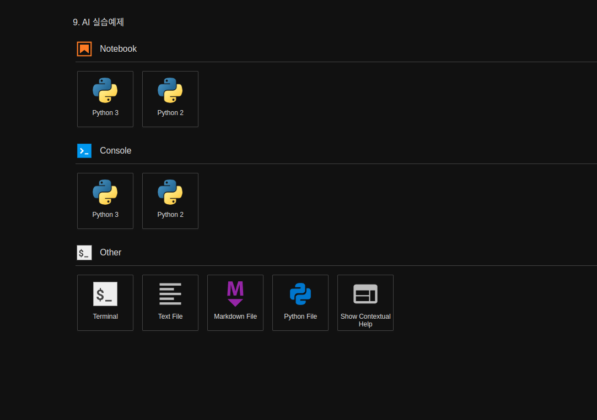
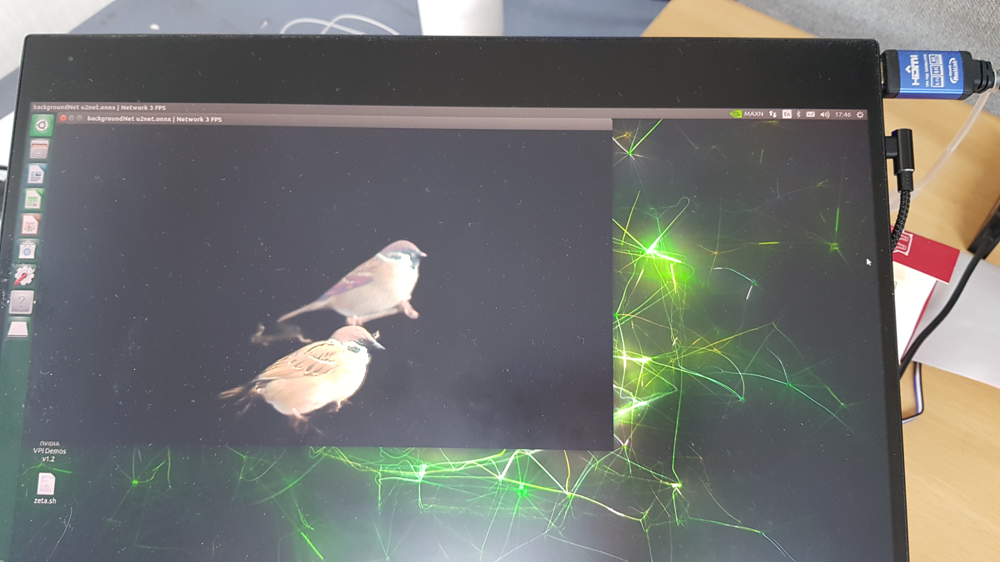
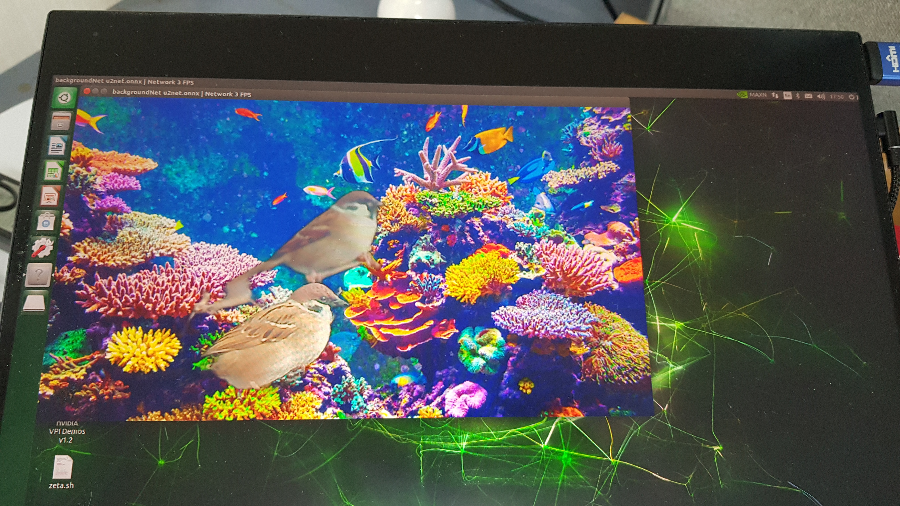

Mission
Project Name: Custom Background Removal and Replacement System
Writing Custom Background Removal Program
Create a new Python file in the Jupyter Notebook environment and name it 02_07-2.background_camera.py.
Press the blue plus button on the top left corner of the web.

Create a new python file by pressing the
Python Filebutton
{kind=link}
Rename the untitiled python file to
02_07-2. background_camera.pyOn the new python file, import the libraries necessary. For our Pose Estimation task, we need to import the Jetson inference library modules and jetson utility library modules
argparse: This library contains modules that are responsbile for bringing and intitializing the flags or parameters set by the user when envoking the program.sys: this library allows us to manipulate/ utilize system functions within our python programs.jetson_inference: This library contains all the pre-built networks that can be used for inference task and a functions that would allow for custom models to be used for inference tasks.backgroundNet: We are importing backgroundNet module for our background removal and change task.
jetson_utils: This library contains modules that are responsible for processing input and output sources along with output stream methods. We will be importing the following modules:videoSource: used to process input source (whether it is a camera, an image, or a video).videoOutput: used to process the output stream.cudaFont: this module allows for overlay on the output stream.loadImage: this module is used to load images for processing.cudaAllocMapped: this module is used for allocating mapped memory on the CUDA device.cudaMemcpy: this module is used for memory copies between the host and device.cudaResize: this module is used for resizing CUDA images.cudaOverlay: this module is used for overlaying images on the CUDA output stream.
import sys import argparse from jetson_inference import backgroundNet from jetson_utils import videoSource, videoOutput, loadImage, cudaAllocMapped, cudaMemcpy, cudaResize, cudaOverlay
After all the libraries are imported, initialize the parser variable with
argparse.ArgumentParsermodule.For our mission, we must receive the network name, and Camera output channel name. Additionally we add 2 other optional parsers.
# parse the command line # For our mission, We receive the network name and Camera name. # Set up argument parser so that command line parameters can be read within the program parser = argparse.ArgumentParser(description="Perform background subtraction/removal.", formatter_class=argparse.RawTextHelpFormatter, epilog=backgroundNet.Usage() + videoSource.Usage() + videoOutput.Usage()) # Major Functionality parameters (required from the user) parser.add_argument("input_CAMERA", type=str, default="", nargs='?', help="use csi://0 for Raspberry Pi Camera") parser.add_argument("--network", type=str, default="u2net", help="pre-trained model to load (see below for options)") # Minor Functionality parameters (optional) parser.add_argument("--filter-mode", type=str, default="linear", choices=["point", "linear"], help="filtering mode used during visualization, options are:\n 'point' or 'linear' (default: 'linear')") try: args = parser.parse_known_args()[0] except: print("") parser.print_help() sys.exit(0)
Initialize the necessary variables.
netvariable for holding the nvidia pre-built networks. For this mission we are using googleNet network.inputvariable for handling the input stream. Using theargsvariable created in our previous step, we will bring in input_CAMERA to set our videoSource.outputvariable for handling the output stream. We are setting the output stream to be displayed onDISPLAY://0.
# load the background removal network net = backgroundNet(args.network, sys.argv) # create video sources & outputs input = videoSource(args.input_CAMERA, argv=sys.argv) output = videoOutput("DISPLAY://0", argv=sys.argv)
Initialize the image replacement routines if the
replaceflag is provided by the user.If the
replaceflag is provided, we load the image provided in the flag using theloadImagemodule.# image replacement routines if args.replace: img_replacement = loadImage(args.replace, format='rgba8') img_replacement_scaled = None img_output = None
Create the replaceBackground function to handle the background replacement process.
This function takes an input image and performs the background replacement using the image loaded in the img_replacement variable.
It resizes the replacement image if necessary using the cudaResize module.
Then, it copies the resized replacement image to the img_output variable using the cudaMemcpy module.
Finally, it overlays the input image with the replacement image using the cudaOverlay module.
def replaceBackground(img_input): global img_replacement_scaled global img_output if not img_replacement_scaled or img_input.shape != img_replacement_scaled.shape: img_replacement_scaled = cudaAllocMapped(like=img_input) img_output = cudaAllocMapped(like=img_input) cudaResize(img_replacement, img_replacement_scaled, filter=args.filter_mode) cudaMemcpy(img_output, img_replacement_scaled) cudaOverlay(img_input, img_output, 0, 0) return img_output
Process the frames until the end of stream (EOS) or the user exits. - Capture the next image from the input source. - If the captured image is None (indicating a timeout), continue to the next iteration of the loop.
while True: # capturethe next image (with alpha channel) img_input = input.Capture(format='rgba8') if img_input is None: # timeout continue
Perform background removal using the
Processfunction of thenetobject.# perform background removal net.Process(img_input, filter=args.filter_mode)
Perform background replacement if the
replaceflag is provided.If the flag is provided, call the
replaceBackgroundfunction with the input image.Otherwise, set the
img_outputvariable to the input image.# perform background replacement if args.replace: img_output = replaceBackground(img_input) else: img_output = img_input
Render the image using the output stream.
# render the image output.Render(img_output)
Update the title bar of the output window with the network name and FPS (frames per second) information.
# update the title bar output.SetStatus("backgroundNet {:s} | Network {:.0f} FPS".format(net.GetNetworkName(), net.GetNetworkFPS()))
Exit the loop if either the input or output stream is not streaming.
# exit on input/output EOS if not input.IsStreaming() or not output.IsStreaming(): break
Executing the Custom Program
Open the
02_07-2.background_camera.pynotebook.
{kind=link}
Run the cell code which initializes the input/ output stream of the environment as well as the CAMERA variable, which will be the flag that determines the input vairable for the program to be a camera stream.
%env DISPLAY=:0 %env csi=:0 %env CAMERA=csi://0
Check if your python notebook can read the python code you have written:
cat /home/zeta/notebook/lecture/'2.AI Training Examples'/'02_07-2.background_camera.py'
Execute the background_camera python code.
Note that we are setting our major functions, -
--network: to set which networks to use in our background removal task. -input_CAMERA: to set which input stream will be used for our task. It is being set to CAMERA environment variable which holdscsi://0as a string.!python3 /home/zeta/notebook/lecture/'2.AI Training Examples'/'02_07-2.background_camera.py' --network=u2net $CAMERA
The program will run and show the output stream with the background removed.
Examples:
If you want to perform background replacement, add the
--replaceflag followed by the path to the replacement image.!python3 /home/zeta/notebook/lecture/'2.AI Training Examples'/'02_07-2.background_camera.py' --replace=images/coral.jpg $CAMERA
The program will run and show the output stream with the background removed and replaced with the specified image.
Examples:
Feel free to experiment with different replacement images and settings to achieve your desired result!
{kind=link}
{kind=link}